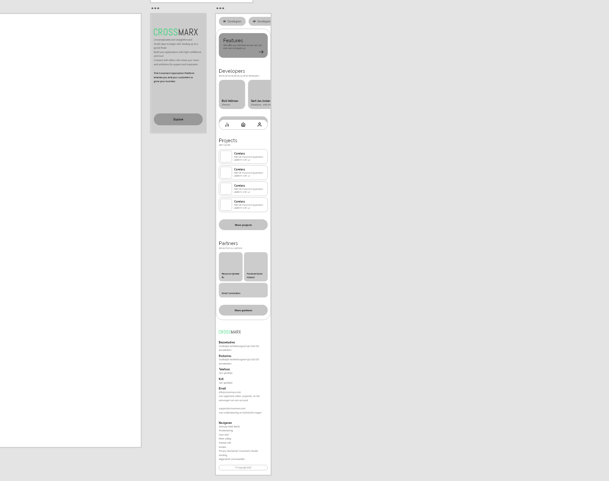

Portfolio werk
Het probleem
Wanneer ik niets te doen heb of wanneer ik moet wachten op Tim, wil ik mijn tijd vullen met nuttigheid om te blijven leren.
De oplossing
De opdracht die ik zelfstandig kan uitvoeren is het maken van een redesign van CrossmarX. Zo kan ik designen (iets wat ik ook leuk vind) en Sass meer onder de knie krijgen. Om inspiratie te krijgen ging ik op Printerest kijken met een eigen board.
Het probleem
Wanneer ik niets te doen heb of wanneer ik moet wachten op Tim, wil ik mijn tijd vullen met nuttigheid om te blijven leren.
De oplossing
De opdracht die ik zelfstandig kan uitvoeren is het maken van een redesign van CrossmarX. Zo kan ik designen (iets wat ik ook leuk vind) en Sass meer onder de knie krijgen. Om inspiratie te krijgen ging ik op Printerest kijken met een eigen board.
Wat heb ik geleerd?
Het bedrijf werkt met Boostrap. Ik wou eerst deze opdracht maken met Bootstrap en Sass samen. Ik ging eerst uitvogelen hoe ik Bootstrap en Sass kon gaan gebruiken. Na uitvogelen ben ik op een conclusie gekomen dat Bootstrap niks voor mij is. 1: Het staat lelijk in de html, 2: Om aanpassingen te doen ben ik ook net zo snel klaar als ik zelf de css schrijf. Door deze conclusie ben ik alleen verder gegaan met de Sass.
Met dit project heb ik Leerdoel 7 kunnen bereiken en meer geleerd over Sass. Nu dat ik eenmaal heb gewerkt met Sass vindt ik dat beter dan css en heb ik iets nieuw geleerd op stage wat ik goed kan gaan gebruiken in de rest van mijn carrière.
Gemaakt werk
Ik ben begonnen met het maken van een High fidelity. Regel: Mobile first, dus daarom hier ook.
- Start pagina: Info eerst en dan een call to action naar de main content
- Nav: Gebruiker kan navigeren met een scroll bar
- Developers wordt getoond met een scroll met afbeeldingen van de developers zelf. Zo krijg je een indruk van de werknemers.
- Projecten en partners is een lijstje met voorbeelden maar dan wel anders vormgegeven.
Live demo
Dit project is werkend gemaakt met HTML en Sass. Zie het live voor je eigen ogen.
P.S: Schaal je scherm naar een mobiel voor een betere ervaring
CrossmarX RedesignFeedback
Doordat dit een zelf bedachte opdracht was had ik geen toekomst in ogen voor dit redesign. Maar van Tim zou ik het wel in een BlueXiao moeten zetten zodat ze dit kunnen gebruiken voor inspiratie wanneer ze de website zelf gaan opfrissen.